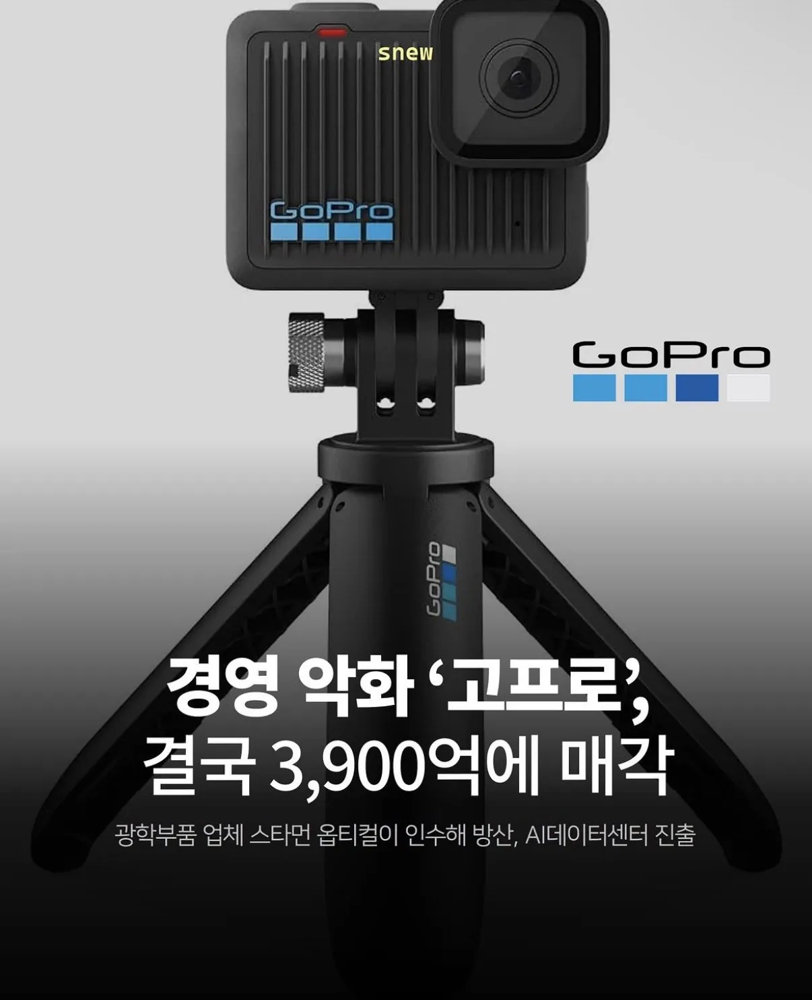

업계 1황이라고 안일하게 대응하면 벌어지는 일..jpg
댓글
그것보다 좀 불만얘기하면 좀 고치거나 쳐들어야하는데 예술병 쳐 걸렸는지 배짱 장사하다 ㅈ된거라고 생각함
버전만 높아지고 성능은 계속 좆박았으니... 후발주자들 한테 따잇따잇~!
고프로에서 오즈모로 바꿨어
한메일 우표제
3.9따리는 와
뭐 요즘 신발회사도 때려치고 데이터센타한다하고 저기도 마찬가지노
개병신 새끼들 충성고객 신규고객들 다 ㅈ까라하고 개선없이 가격만 쳐올리니 되겟냐고ㅋㅋㅋ
이새끼들은 그냥 병신이라 망해도 싸
응 이제 오즈모야~ 오즈모 액션 쓰는데 만족중 ㅋㅋ
소프트웨어 버그인지 음성 수록 안되는 경우가 부지기수에
여름철에 쓰기엔 열관리 못해서 몇분 녹화하면 바로 열팽창으로 뻗어버리는건 종특.
개선없이 신모델이랍시고 가격만 올려서 내놓으니 오스모, 인스타360에 밀려서 도태됨
애플도 무지성으로 가격 올리면 이렇게 되려나 대체 불가 os에 고액에도 팍팍사는 충성고객들 있어서 큰 문제 없으려나 ㅋㅋ
애플은 락인효과가 너무 커
애플은 가격이 비싸긴 했어도 늘 삼성 동세대 모델보다 성능은 좋았음. AS나 악세사리 배짱장사, 언플 이런게 짜치는거지 기능적으로 크게 문제있던건 아니니까.
구글에 개목줄잡힌 주제에 구세대 디멘시티 넣고300만원 받으려고 하는 회사 제품의 충성고객들도 있는데 뭘.
팩트) 애플 거품 충성고객이 어쩌고 감성이 어쩌고 하는 사람들은 한국인 밖에 없다.
이건 좀 아닌듯. 해외도 아묻따 애플 겁나마나…
선점 효과로 배짱장사 하다가 망한거지.
쓰다가 집어던지고 싶었던 적 한두번이 아니다 ㅋㅋ
중국 제조업이 따라갈 수 없는 뭔가를 보여줬어야 했는데 그게 없다면 뻔한 결과만 있을 뿐..
쟤네도 애플처럼 주변기기 값 엄청비싸게 팔지않나 ㅋㅋ
고프로가 안일하긴 했는데 인스타나 dji나 중국 정부 기업에서 보조금 받아서 싸게 파는게 가능하니까 그런거 아니냐.... 가격 오를까봐 겁남
가격문제를 떠나서 기본성능부터 엄청 차이벌어짐
기본 성능 차이나는 건 아는데 고프로쪽에서는 '아니 저 성능을 저가격에 어떻게 팜?' 이렇게 말 나올정도로 말도안되는 가격에 나오지 않았나 싶음
dji 포켓 액션 드론 다 쓰고 있는데 사실 이게 맞는 가격인가 싶을때가 있음 성능 대비 가격이 싸다보니까
비싸면 성능이 좋은가? ->아님 좆구림
그럼 충성고객에게 보상하는가? -> 아님 as 1년 지나면 아예 수리 불가임
감성이라도 있는가? -> 아님 좆구림
지들이 무슨 애플이라고 착각하고 방만경영 2019년부터 아직 안망한게 오히려 신기한 천하의 개븅신 저능아 기업임
미국 제조업체의 한계인가? 애플도 그러지 않음?
애플을 고프로랑 비교할건 아닌듯
아니 as 같은거 말하는거 ㅋㅋ 개발은 애플이랑 비교하는건 실례인데
한국 애플 as사건들 생각하면 미국 제조업체들이 as같은거 ㅈㄴ 생색내는거같아서
dji가격이 정가고 고프로는 애미가 뒤졌는지 성능개선따윈 없고 as는 열명중에 한두명만 인정하는 기적의 운영과 가격은 짐바붸 달러마냥 무한대로 쳐올려서 망하는게 맞음
dji 오즈모 인스타360 한창 치고올라올때도 알빠노? 그래서 고프로 안쓸거야?ㅎㅎ 하다 쳐망한 병신기업이라 일말의 동정도 아까움
ㅇㅎ 나는 고프로가 그정도로 쓰레기일줄 몰랐음 첫 구매를 dji로 해서 ㅋㅋㅋ
다들 이걸로 영상 찍음?
스마트폰말고 브이로그같은거 찍을려면 바로 오스모 포켓같은걸로 가는게 좋더라
뭔가 유튜버 처럼 특정 타켓 같은데
댓글보니 되게 대중적인것처럼 느껴져서
자녀있는 가정이면 애들 영상도 찍고 싶어지니 요즘 가정이면 하나쯤 가지고 싶어지는 물건이긴 함
여행만 가도 사진대신 영상찍고싶을때 있잖아
걍 가볍게 찍는거면 너무 오래전 구형만 아니면 스맛폰이 나음. 액션캠은 애초에 내구성, 액티비티 활동에 특화된거라 사용 목적이 좀 다르고 영상 품질도 스맛폰이 나음.
짐벌캠은 안정적인 촬영과 영상 품질을 좀 높이고 싶다 할 때 쓰는 정도. 최신 짐벌캠 포켓4P, 루나 울트라가 망원 렌즈까지 달아서 이제는 최대 12~15배 줌까지 되니까 디지털 줌이라 품질 저하 감안해도 거의 1년 사이에 계속 발전하고 있어서
나중엔 준미러리스급은 가능하지 않을까 싶음.
저거 산다해서 영상이 뭐 드라마틱하게 바뀌진 않고 여행 유튜브들은 목적이 있으니 많이 쓰긴하지.
dji가 지들 드론에 넣어달라고 할 때 뻐팅겨서 그냥 오즈모 만들어서 망한거지
발열로 꺼지는 액션캠 주제에
나는 고프로가 카메라 종류인줄 알았더니
회사명이었구나
“ㅋㅋㅋ 그래서 안살꺼야?” 이 마인드로 가격만 점점 올리고, AS 개판으로 대응하니 예견된 미래였음.
옛날에 회사에서 업무용으로 샀다가 얼마나 고생했는데…
선점효과로 특수좀 누린거가지고 뭐라도 된 양 기술개발은 안하고 턱쳐들고 내가낸대 몇년 하다가 좆밥된 전형적인 케이스.
액션캠 하면 고프로였는데 아쉽
AS병신, 기술력 제자리, 발열 못버팀, 베터리 임신, 가격은 계속 비싸짐 걍 똥볼 오지게찼지
왜 카메라가 지 배터리 반도 안 달았는데 발열에 꺼지는건지 이해가 안감
고프로는 애초에 기술없이 걍 중국회사들이 하드웨어 만들어왔다던데. 그래서 걍 뺏긴듯